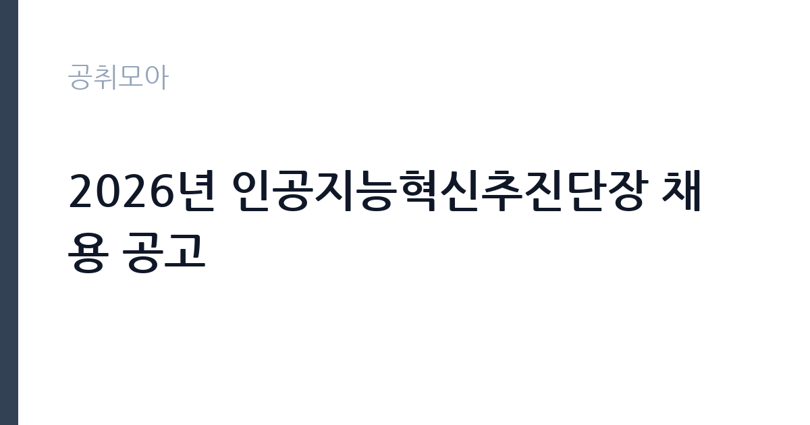

[공공기관] 2026년 인공지능혁신추진단장 채용 공고
중소기업기술정보진흥원 · 세종 · 마감 2026-10-07 (D-16) · 출처 잡알리오

한눈에 보는 모집 조건
| 기관 | 중소기업기술정보진흥원 |
|---|---|
| 공고명 | 2026년 인공지능혁신추진단장 채용 공고 |
| 고용형태 | 정규직 |
| 근무지 | 세종 |
| 게시일 | 2026-09-21 |
| 마감일 | 2026-10-07 (D-16) |
지원자격, 이렇게 읽으세요
- 공공기관 채용공시
- 세부 조건은 원문 공고문 확인
공고문의 응시자격은 짧게 쓰여 있지만 실제로는 세 가지를 봅니다. 첫째 결격사유 해당 여부, 둘째 자격·경력의 직무 연관성, 셋째 근무 시작 가능일입니다. 셋 중 하나라도 애매하면 원문 공고문의 세부 조항을 먼저 확인하고 지원서를 쓰세요. 특히 중소기업기술정보진흥원 공고는 정규직 전형이라 서류에서 직무 연관 키워드(공공기관)를 명시하는 게 유리합니다.
이 공고의 포인트
이 공고의 관전 포인트는 ''입니다. 중소기업기술정보진흥원이 내건 조건 가운데 '공공기관 채용공시' 대목이 서류의 분수령이 됩니다. 해당되면 주저 없이 지원하고, 애매하면 원문 공고문의 세부 조항을 먼저 대조해 보세요. D-16 일정상 오늘 내로 판단하는 게 좋습니다.
전형은 어떻게 진행되나
대부분 서류심사 후 면접심사 순으로 진행됩니다. 서류에서는 지원서·자기소개서의 직무 적합성을 보고, 면접에서는 실무 이해도와 근무 지속 가능성을 봅니다. 마감일(2026-10-07) 직전에는 접속이 몰려 원서 접수가 막히는 경우가 있으니 최소 하루 전 제출을 권합니다. 제출 후에는 접수번호·수험표 출력 여부를 반드시 확인하세요.
원문에서 확인한 전형 방식
< 자세한 내용은 반드시 채용공고 참고 > ※ 공통 자격요건 - 모집분야 직무설명서 상의 지식을 보유한 자 - 병역법 제76조에 의한 병역의무 불이행 사실이 없는 자 * 현역 복무 중인 경우, 임용일 이전 전역 가능한 자 - 기정원 인사규정 제7조에 해당하는 결격사유가 없는 자 - 임용예정일(2026. 12. 18.)에 임용 가능한 자(단, 협의를 통해 2027. 1. 4.로 유예 가능) * 겸직불가 : 기존 근무처가 있는 경우 임용예정일 전 반드시 면직처리가 되어야 함 * 기정원 재직 중인 직원이 본 채용의 최종 합격자로 선정되는 경우 종전 고용관계를 종료하고, 본 채용의 합격자와 동일한 기준 적용 ※ 세부 자격요건 ■ 공통 요건을 충족하고, 다음 요건에 해당하는 자 - 다수 조직을 통할·조정하며, 중장기 사업방향을 제시할 수 있는 리더십과 비전 제시 능력을 보유한 자 - 중소기업의 제조혁신·인공지능 전환, 스마트공장 보급·확산 등 관련 정책수립·사업기획·추진 경험을 보유한 자 - 조직관리 및 경영능력을 보유한 자 - 기관장 및 관계기관과의 협력체계를 구축하고, 원활한 의사 소통을 이끌어낼 수 있는 자 - 청렴성과 도
위 내용은 중소기업기술정보진흥원 원문 공고의 전형 항목을 그대로 옮긴 것입니다. 단계별 배수와 평가 요소가 적혀 있으니 본인 강점과 맞는 단계에 맞춰 준비 순서를 정하세요. 전형별 합격자 발표일도 원문에서 함께 확인하는 것이 좋습니다.
이런 분께 추천해요
- 세종 근무가 가능한 분 — 통근·거주 조건이 맞는지가 1순위입니다
- 정규직 전형을 찾는 분 — 공공기관 분야 관심자라면 우선 검토 대상입니다
- 마감(2026-10-07) 안에 서류를 낼 수 있는 분 — D-16이니 오늘 지원서 초안부터 잡으세요
지원 전 체크리스트
- 원문 공고문의 응시자격·결격사유 정독했는가
- 자격증·경력증명서 등 증빙 스캔 준비됐는가
- 마감일(2026-10-07) 전날까지 접수 가능한가
- 근무지(세종)·근무형태(정규직) 감당 가능한가
모집 일정과 제출 타이밍
이번 공고의 접수 기간은 2026-09-21부터 2026-10-07까지입니다. 남은 기간은 약 16일입니다. 서류 준비에 15일을 쓰고 마지막 하루는 접수·확인용으로 남겨두세요. 원서 접수는 시작일보다 마감일에 몰리는 구조라, 서버가 느려지는 마감 당일은 피하는 게 상책입니다. 권장 스케줄을 짜보면 첫째 날 공고문 정독과 지원자격 체크, 중간 날 자기소개서 작성과 증빙 준비, 마감 전날 접수 시스템 사전 입력입니다. 특히 중소기업기술정보진흥원 채용은 마감 이후 추가 접수를 받지 않으니, 접수번호와 확인증 출력까지 마쳐야 비로소 지원 완료입니다.
직무 이해하기: 공공기관
공공기관 실무의 공통분모는 직무기술서와 성실성입니다. 채용 분야의 직무기술서를 내려받아 필요 역량을 자기소개서에 그대로 녹이세요. 공공 채용은 블라인드 전형이 많아 사진·학교·출신지를 가리는 대신 직무 연관 경험의 구체성이 당락을 가릅니다. 중소기업기술정보진흥원의 이번 채용(정규직)도 같은 잣대로 보면 됩니다. 공고 제목에 적힌 분야명과 직무기술서의 필요역량을 나란히 놓고, 본인 경험에서 겹치는 키워드를 세 개 이상 뽑아보세요. 그 세 개가 자기소개서와 면접 답변의 뼈대가 됩니다.
자기소개서 작성 팁
좋은 자기소개서의 공식은 단순합니다. 지원 분야(공공기관)와의 인연 한 줄, 숫자가 박힌 경험 두 개, 입사 후 포부 한 단락입니다. 반대로 중소기업기술정보진흥원 서류 탈락 사유 상위권은 늘 비슷합니다. 직무와 무관한 자서전식 전개, 증빙 자료와 어긋나는 주장, 마감일(2026-10-07) 실수입니다. 정규직 전형 지원자라면 채용 즉시 업무가 가능하다는 점을 글로 못 박아 두세요. 실무 투입 속도가 가산점처럼 작용합니다.
면접 준비 포인트
면접은 서류에 쓴 경험의 진위 확인과 조직 적합성 검증이 목적입니다. 자기소개서에 적은 두 가지 경험을 1분 스피치로 말할 수 있게 연습하고, 중소기업기술정보진흥원의 최근 보도자료나 경영공시에서 핵심 사업 하나를 골라 지원 분야와 연결해 답변을 준비하세요. 마지막 질문 시간에는 근무지(세종)·근무형태(정규직)를 감당할 수 있다는 의지를 짧게 밝히는 것이 효과적입니다. 복장은 단정하게, 도착은 30분 전에, 질문에는 결론부터 말하는 것이 공공기관 면접의 기본입니다.
급여·근무조건 읽는 법
공고문의 보수 표기는 호봉·수당·상여를 합친 기준이 아니라 기본급 기준인 경우가 많습니다. 실제 수령액은 원문의 보수·복무 조항과 동일 기관 재직자 채용 후기를 함께 봐야 가늠이 됩니다. 정규직 공고라면 계약 기간, 연장·전환 조건, 4대 보험과 퇴직금 적용 여부를 원문에서 반드시 확인하세요. 근무지(세종)가 도서·산간이거나 교대 근무가 포함된 경우에는 주거 지원·통근버스 조항도 체크리스트에 넣으세요.
자주 묻는 질문
- 마감일(2026-10-07)을 넘기면 지원할 수 있나요?
없습니다. 공공 채용은 마감 시각 이후 접수를 받지 않습니다. 시스템 마감 1시간 전에는 대기열이 길어지니 D-16을 보고 미리 제출하세요. - 세종 외 거주자도 지원 가능한가요?
공고에 거주 제한이 별도로 없으면 전국 지원이 가능합니다. 다만 일부 지자체·교육청 공고는 거주·이전 조건이 붙으니 원문 응시자격란을 확인하세요. - 정규직 전형에서 가장 중요한 서류는 무엇인가요?
직무 연관성을 보여주는 자기소개서와 증빙(자격증·경력증명서)입니다. 중소기업기술정보진흥원 심사는 정량(자격·경력)과 정성(지원동기·직무이해)을 함께 봅니다.
함께 보면 좋은 공고
[공공기관] [한국직업능력연구원] 2026년도 제6차 기간제 계약직원(휴직자 대체) 채용공고 — 마감 2026-10-06[공공기관] 한국보건사회연구원 정규직 신규채용(5차) 부연구위원(사회보장분야) — 마감 2026-10-07[공공기관] 2026년 제2차 한국장애인고용공단 직원 채용 — 마감 2026-10-06출처: 잡알리오 공개정보를 바탕으로 공취모아가 정리한 안내글입니다. 모집 조건·일정은 변경될 수 있으니 지원 전 반드시 원문 공고문을 확인하세요. 본 글은 정보 제공용이며 합격을 보장하지 않습니다.